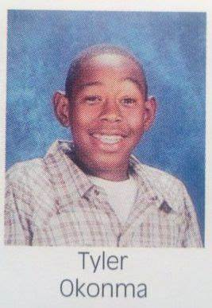

Tyler, The Creator

Summary
Tyler, The Creator is a multi-talented artist known for his unique style in music, fashion, and visual art. As the leader of the hip-hop collective Odd Future, he has pushed the boundaries of creativity and self-expression.
Innovative
Eclectic
Bold
Life Timeline
- Born in 1991 in Ladera Heights, California
- Released debut mixtape "Bastard" in 2009
- Founded the collective Odd Future in 2010
- Released critically acclaimed album "Goblin" in 2011
- Won a Grammy Award for "Igor" in 2020
- Opened the Camp Flog Gnaw Carnival in 2012
- Released "Flower Boy" in 2017, marking a shift in his musical style
- Launched his fashion brand, Golf Wang, in 2011
- Collaborated with various artists, including Frank Ocean and A$AP Rocky
- Continues to influence music and culture worldwide
Download Link
Tylers life story